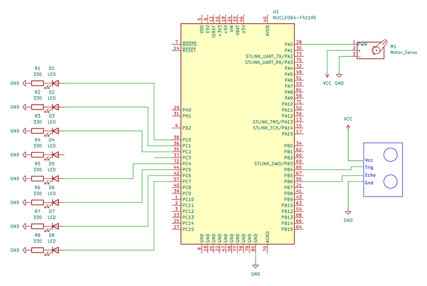
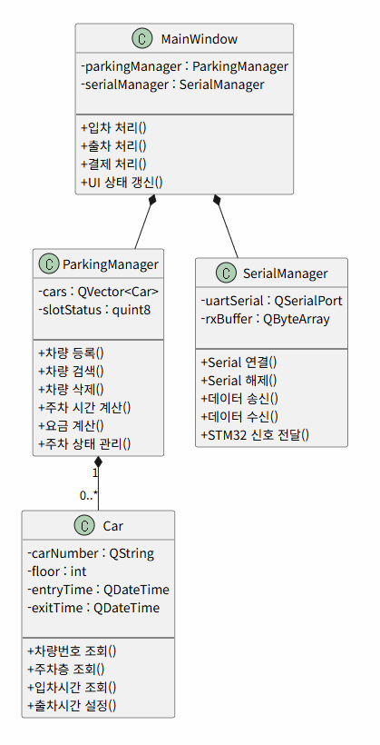
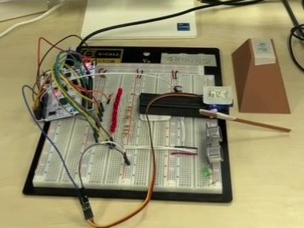

2026.08 · 팀 4인
주차 타워 입출차 관리 시스템
Qt PC 앱과 STM32가 UART로 연동하는 주차 관리 시스템
1. 프로젝트 개요
- 프로젝트명
- 주차 타워 입출차 관리 시스템
- 수행기간
- 2026.08.16 ~ 2026.08.19
- 수행인원
- 4인
- 담당역할
- STM32 초음파 센서 기반 차량 접근 감지 모듈, 파트별 역할 분담
- 사용 기술
- C, STM32F411(NUCLEO-F411RE), HC-SR04, TIM4/TIM5, UART(115200bps)
- 담당 코드
STM32_M4/ultrasonic.c- 링크
- GitHub
2. 개발 배경 및 목적
- 교육 과정 Qt 미니 프로젝트
- PC 앱과 MCU 간 UART 연동, 센서 기반 이벤트 처리 학습
3. 개발 목표
- 차량 감지 → 입차 → 빈 칸 배정 → 차단기 제어 → 출차 정산 흐름 구현
- delay 없이 타이머 인터럽트 기반 센서 측정
4. 시스템 구성
- Qt PC 앱: 차량번호 입력, 입·출차 관리, 요금 정산 화면 (팀원 담당)
- STM32: 초음파 차량 감지, 빈 칸 배정, 서보 차단기 제어
- 연결: Qt ↔ STM32 UART (115200bps)


5. 동작 흐름
- 초음파 센서의 차량 접근 감지, STM32 → Qt 감지 이벤트(
D) 송신 - Qt에서 차량번호 입력 후 입차 요청
- STM32의 가장 낮은 층 빈 칸 배정 및 서보 차단기 개방
- 출차 시 Qt에서 요금 정산
6. 주요 구현 내용 (초음파 감지 모듈)
- Trigger: TIM5 인터럽트 기반 10µs 펄스 생성 (delay 미사용)
- Echo: TIM4 타이머로 Echo 펄스 폭 측정 후 거리 환산
- 차량 판정: 150mm 이하 3회 연속 시 감지, 200mm 이상 3회 연속 시 해제 (경계 거리 흔들림·노이즈 방지)
- 감지 상태가 "없음 → 감지"로 바뀌는 시점에만 이벤트 1회 송신
- 타이머 인터럽트 기반 측정으로 UART·서보 동작과 병행
7. 문제 해결
7.1 감지 이벤트 반복 송신
- 문제
- 차량이 센서 앞에 머무는 동안 감지 이벤트가 계속 송신
- 원인
- 측정할 때마다 거리 조건만으로 이벤트 송신
- 해결
- 감지 상태를 저장하고, 상태가 "없음 → 감지"로 바뀌는 순간에만 1회 송신
7.2 경계 거리에서 판정 흔들림
- 문제
- 기준 거리 부근에서 측정값 흔들림으로 감지·해제 반복
- 해결
- 감지(150mm)와 해제(200mm) 기준을 분리하고 3회 연속 조건 적용
8. 결과
- 차량 접근 감지부터 입차, 차단기 개방, 출차 정산까지 시연

9. 느낀 점
- 센서 값 하나보다 상태와 이력을 함께 봐야 판정이 안정적이라는 점